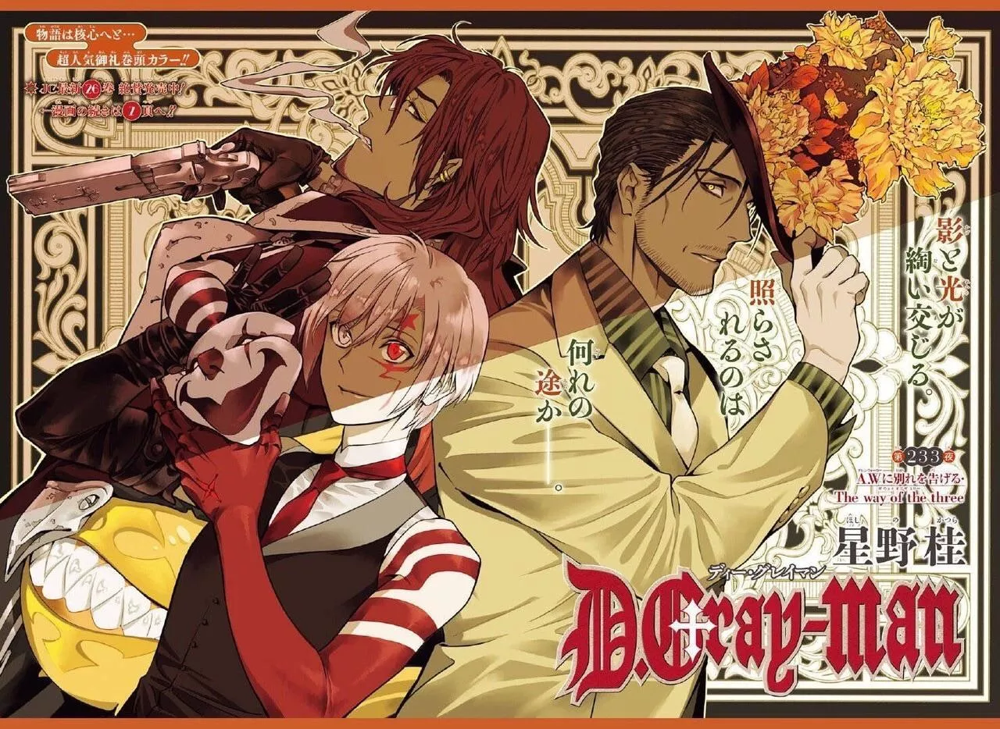
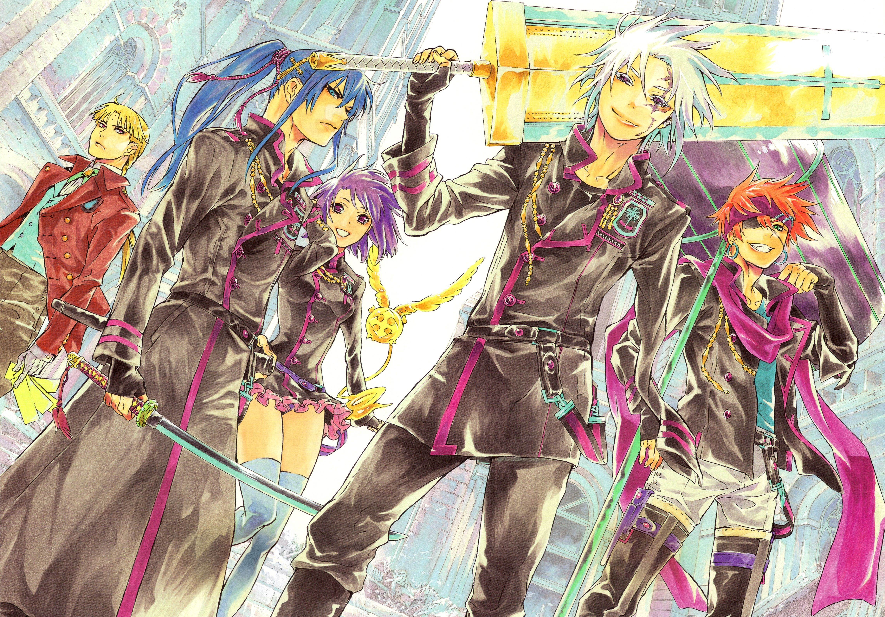
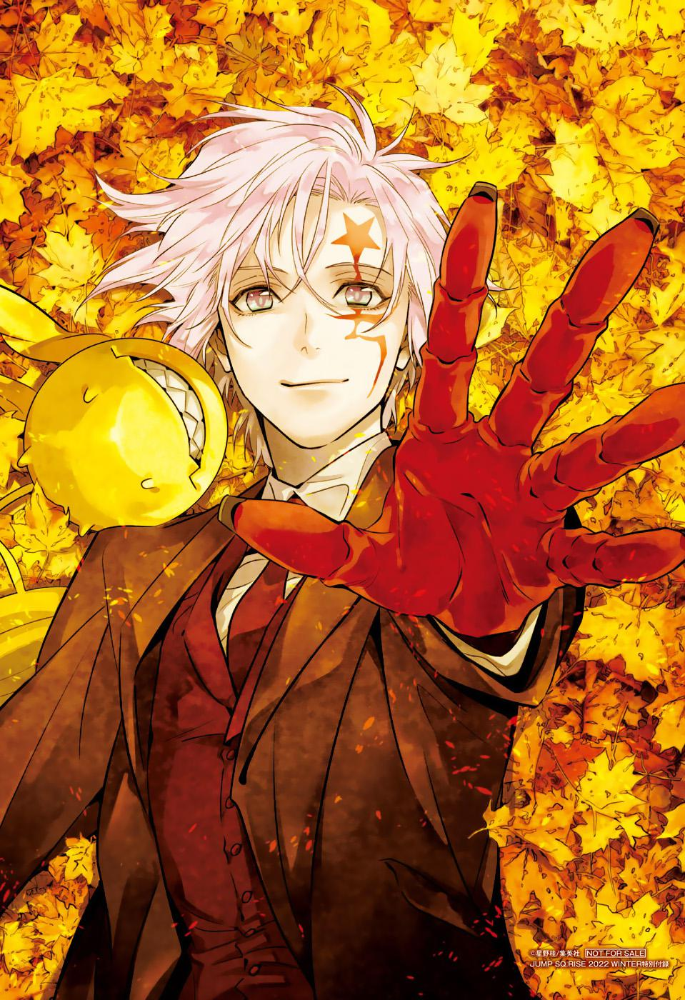

 Production After graduating from high school, Hoshino was unsure what job get: animating or writing manga. When drawing manga, Hoshino saw herself as a failure when trying to draw shōjo manga, series aimed towards young girls. As a result, she decided to focus on manga aimed towards male readers, shōnen manga. After sending a one-shot to Shueisha, response from the editorial was positive much to Hoshino's surprise. D.Gray-man originated from a one-shot that Hoshino developed during her youth, where she aspired to write the Earl as the main character of her own works. However, finding the character unsuitable for a manga magazine aimed at teenagers, she instead created Allen to be the protagonist. Hoshino sent a draft of D.Gray-man to Shueisha on a non-specified date. She had mixed feelings about writing the series, since she had been offered other jobs (such as developing video games). However, Shueisha liked the draft and the staff asked Hoshino to go ahead with the series in 2004 believing it would be popular....She had originally intended to write a story about zombies, but was discouraged by her editor T-shi and decided to abandon the idea during the third chapter. Asked about her inspiration for writing about the supernatural, Hoshino said that she feared the supernatural after seeing the 1973 film The Exorcist. Although the horror film frightened her, it also inspired the author to design the manga's Akuma. The area in the series known as Noah's Ark was based on science fiction ideas rather than the supernatural ideas that had influenced the Akuma. After conceiving of the Ark's role in the series, Hoshino decided to write a song when Allen is rebuilding it through a piano. She requested help from her editor, a university graduate, but decided to use her own lyrics. She blamed it on her own ego.
 Elements of D.Gray-man first appeared in Hoshino's one-shot title Zone, in which the Akuma, the exorcists, and the Millennium Earl plan to end the world. Although Allen Walker is male, his character is based on Zone's female protagonist. Lavi is based on the protagonist of Hoshino's planned series, Book-man, that she originally wanted to write. Other characters, such as the Millennium Earl, Lenalee Lee, and Komui Lee, are based on real people whom Hoshino has not specifically identified; some are well-known scientists, and Komui is based on Hoshino's boss. The character of Yu Kanda, based on a samurai, was created to vary D.Gray-man's Western setting. Hoshino found the design of some of the characters difficult early in the series. In 2011, the author visited New York City for research, and believed that the city had greatly influenced her work. Hoshino visited cemeteries, and was deeply impressed by her guides' comments at Ground Zero of the World Trade Center (left after the September 11 attacks). She said that she would like to spend more time in New York City to gather data for the series
 D.Gray-man is one of my favorite anime/manga. When I found the anime when I was 13 I was in love with it. Hulu did not had the full episode of the anime, and even so I would re watch it a munch of times. When I got older and was able to save my allowence, I bought the Manga series and since then I would re read it a bunch of times. I love this series so much it is part of my childhood.